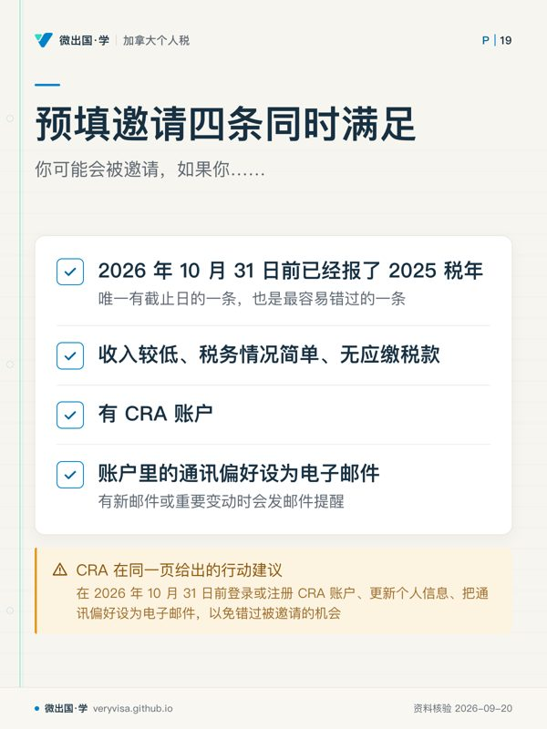
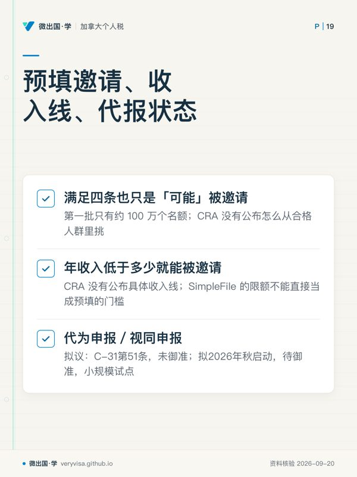

核实日期：2026-09-13｜现行口径：2026 税年（2027 年春申报），福利口径为 2026 年 7 月至 2027 年 6 月福利年｜复核：2026-11-01（本页有一项未御准的法案和一个 10 月底的动作点，过了这个日子必须回头改） 所有日期与金额只取加拿大税务局 (Canada Revenue Agency, CRA)、就业与社会发展部 (ESDC)、财政部与国会 LEGISinfo 的原文；法案里的内容一律标「拟议」。
2026 年秋天，关于「CRA 以后替你报税」的说法在华人圈里传得很快，但它其实是两件不同的事被混在一起讲了。第一件是预填申报 (pre-filled return)：CRA 从 2027 年 3 月起，在约 100 万人的 CRA 账户里放一份已经填好的 2026 税年报税表，本人核对、确认后提交（CRA）。第二件是代为申报，官方叫视同申报 (deemed filing)：对多年没报税、又不欠税的人，CRA 在通知后若本人不回应，就直接替他报一份——这一条写在 C-31 法案里，截至核实日还在众议院委员会，没有御准（Parliament of Canada (LEGISi…）。
这一页写给三种人：只领养老金或低收入、想知道「我以后还要不要自己报」的老人与家庭；刚来加拿大、想知道自己第一年能不能走这些免费通道的新移民与留学生；以及做报税实务、要向客户解释这两个项目区别的学员。读完你应该能做到三件事：分清预填与代报各自管谁、什么时候开始、法律上走到哪一步；判断自己或家人能不能进 2027 年 3 月那一批邀请，并在 2026 年 10 月 31 日前把该做的做完；以及算清楚「不报税」到底会丢掉哪几笔钱。
一、制度设计与底层逻辑：为什么不欠税的人也被催着报税
1.1 自评自报制度，和一张挂在报税表上的福利网
加拿大个人所得税是自评自报 (self-assessment)：法律要求有应缴税款的人报税，而不欠税的人，法律并不强制。问题出在另一头——CCB、加拿大杂货与必需品福利 (Canada Groceries and Essentials Benefit, CGEB)、GIS 这些钱，几乎都要按报税表上的净收入来判定资格和金额。财政部在 Budget 2025 里说得很直白：个人一般要每年报税才能拿到经税制发放的福利，因为 CRA 是按净收入判定大多数福利的（加拿大财政部）。CRA 自己的页面也写明，想开始领或继续领这些福利，就得每年报税更新信息（CRA）。
于是出现了一个悖论：最需要福利的低收入人群，恰恰最容易因为「我又不交税」而不报税。收入越低，漏报的代价在比例上越重。
1.2 政府的两步解法：先帮会报的人更省事，再替不报的人报
两个项目针对的是两群不同的人。
预填申报面向已经在报税、情况简单的人：他们本来就会报，CRA 把已掌握的工资单、养老金单等信息先填进去，本人核对后提交，省掉填表这一步。这是服务升级，不改变「本人申报」的法律性质。
代为申报面向已经掉队的人：前三个税年里至少漏报过一年、全部收入都有第三方信息单、不欠税。对这群人，光提供方便不够，他们根本不会来打开账户。所以法案拟给 CRA 一项酌情权力——先通知，给 90 天，没有回应就替他报（Parliament of Canada）。
1.3 谁与谁在博弈：方便、准确与责任
CRA 替人报，就要回答「错了算谁的」。C-31 的答案是：代报的报税表视同本人申报；如果错漏是因为本人没在 90 天通知期内把更正告诉 CRA，拟定视为本人的失实陈述 (misrepresentation)（Parliament of Canada）。失实陈述在程序法里的意义是：它会打开正常复评期之外的复评可能（复评期与失实陈述的关系另见本课程序板块第一页）。所以「让 CRA 替我报」不是免责，收到通知不看，后果仍由本人承担。
预填申报同理：CRA 页面明确说本人可以核对、更新、补充缺失信息，然后接受并提交（CRA）。提交这个动作是你做的，签字责任也就是你的。
⚠️
两个项目都没有取消「报税义务」
预填是 CRA 替你填草稿，不提交就等于没报。代报是一项尚未成为法律的试点，而且只覆盖前三年有漏报、全部收入都有信息单、不欠税的一小群人。CRA 自己对试点的描述是「小规模试点」（CRA）。把这两件事理解成「以后不用报税」，是这一页要纠正的第一个误解。
二、2026 税年现行规则与数字
2.1 两个项目并排对照

| 对照项 | 预填申报 (pre-filled return) | 代为申报／视同申报 (deemed filing) |
|---|---|---|
| 面向谁 | 低收入、情况简单、无税，并且 2026-10-31 前已报 2025 税年（CRA） | 前三个税年至少一年没报、截止日后仍未自报、全部收入有信息单、应税收入不超过基本额（Parliament of Canada） |
| 启动时间 | 2027 年 3 月起，约 100 万人获邀，用于 2026 税年；2029 年约 550 万人获邀，用于 2028 税年（CRA（1、2）） | CRA 页面写「拟 2026 年秋启动，待御准」，小规模试点（CRA） |
| 机制 | 邀请出现在 CRA 账户里；本人核对、修改、补充后接受并提交 | CRA 先发已有信息的通知；本人 90 天内不自报也不更正，CRA 可代报并出评税通知（Parliament of Canada、加拿大财政部） |
| 本人要不要动手 | 要：不提交就不算报 | 法案设计上可以不动手，但可以通知 CRA 不许代报（opt out） |
| 法律状态 | 已宣布的 CRA 行政服务，页面未标待御准（CRA） | 拟议：写在 C-31 第 51 条，拟新增 ITA s.150(1.5)–(1.6)；C-31 在众议院委员会审议中，未御准（Parliament of Canada (LEGISi…） |
| 适用税年 | 2026 税年起 | 法案拟适用 2025 及以后税年（Parliament of Canada） |
| 出错责任 | 本人提交，本人负责 | 视同本人申报；未在期限内更正导致的错漏拟视为本人失实陈述 |
| 读者现在要做什么 | 2026-10-31 前报完 2025 税年、开好 CRA 账户、通讯偏好设为电子邮件 | 不要等。能自己报就自己报；家里有多年没报的老人，现在就补 |
2.2 预填邀请的四个条件，逐条对原文
CRA 的原话是「你可能会被邀请，如果你……」，四条同时满足（CRA）：
第一条，2026 年 10 月 31 日前已经报了 2025 税年。原文：filed a tax return for 2025 by October 31, 2026。这是四条里唯一有截止日的一条，也是最容易错过的一条。
第二条，收入较低，税务情况简单、无应缴税款。原文：a lower income and simple, non-taxable situation。CRA 没有公布这一条的具体收入线，所以任何「年收入低于多少就能被邀请」的说法都是没有出处的。能参照的只有 SimpleFile 的限额（见 2.4），但那是另一个服务的门槛，不能直接当成预填的门槛。
第三条，有 CRA 账户。原文：a CRA account。
第四条，账户里的通讯偏好设为电子邮件。原文：your correspondence preference in your CRA account set to "electronic mail"。设成电子邮件后，CRA 账户里有新邮件或重要变动时会发邮件提醒（CRA）。
CRA 在同一页给出的行动建议是：在 2026 年 10 月 31 日前登录或注册 CRA 账户、更新个人信息、把通讯偏好设为电子邮件，以免错过被邀请的机会（CRA）。
ℹ️
满足四条也只是「可能」被邀请
原文用的是 may be invited。第一批只有约 100 万个名额，CRA 没有公布怎么从合格人群里挑。所以正确的心态是：把四条做齐，拿到入场资格；没收到邀请，照常用其他免费渠道报 2026 税年。
2.3 C-31 拟定的代报条件：比预算文件更严
Budget 2025 首次提出代报时写的是「截止日后 90 天内仍未自行申报」（加拿大财政部）。2026 年 5 月 6 日一读的 C-31 文本把条件写得更细，也更严（Parliament of Canada、Parliament of Canada (LEGISi…）：
| 条件（拟 ITA s.150(1.5)） | 法案原文要点 | 和预算文件相比 |
|---|---|---|
| 主体 | 全年为加拿大居民的个人，不含信托与逝者 | 预算只写不含信托；「全年居民」是法案新增 |
| (a) | 本人没有通知 CRA 不许代报 | 即 opt out |
| (b) | 前三个税年至少有一年没报 | 相同 |
| (c) | 当年截止日后 45 天内仍未自报 | 预算写 90 天 |
| (d) | 当年全部收入都已由第三方信息申报表报给 CRA | 相同 |
| (e) | 应税收入不超过联邦与省基本个人额（可加年龄额、残障额）两者中较低者 | 相同 |
| (f) | CRA 已通知其掌握的信息，本人 90 天内既未自报、也未提交会让条件不成立的更正 | 相同 |
| (g) | 当年没有破产 | 法案新增 |
| (h) | 部长另定的条件 | 相同 |
这张表里有两处要特别看：45 天与 90 天之差，以及「全年居民」。后者直接决定了新移民第一年进不了这条通道（见 2.7）。在法案御准之前，两个版本都只是拟议，哪一版最终成为法律要看委员会和参议院的修改。条文编号也跟着变了：2025 年 11 月随预算提交的筹款动议 (Notice of Ways and Means Motion) 把代报写成新增 s.150.2、截止日后 90 天（加拿大财政部）；C-31 一读文本改成 s.150(1.5)–(1.6)、45 天（Parliament of Canada）。所以别处文章写「s.150.2」「截止后 90 天」的，引用的是预算阶段的草案版本，不是法案现行文本。
✕
「CRA 已经开始替低收入者报税」是错误说法
截至 2026 年 9 月 13 日，LEGISinfo 显示 C-31 的状态是 At consideration in committee in the House of Commons，没有御准记录；它 2026 年 5 月 6 日一读，6 月 3 日二读并交付委员会（Parliament of Canada (LEGISi…）。CRA 自己的页面写的也是 pending Royal Assent（CRA）。任何说这项制度「已生效」「已上线」的文章都与原文不符。
2.4 与现有免费申报渠道的关系：SimpleFile 仍是主力
预填与代报都不是凭空出现的，它们是在 SimpleFile 这条现有管道上往前走两步。CRA 把三者并排列出：SimpleFile 是现行服务，每年开放，2026 年约 300 万人合格（CRA）。
SimpleFile 有三种方式。数字版 (SimpleFile Digital) 有无邀请都能用（CRA）；电话版 (SimpleFile by Phone) 和纸质版只限受邀者（CRA）。电话版的邀请在 3 月和夏季寄出，电话号码只印在邀请包里，网上不公布；本季开放期是 2026 年 3 月 9 日到 2027 年 1 月 29 日（CRA）。坊间常说的「打个电话就能报税」，现行名称就是 SimpleFile by Phone；它的旧名是 File My Return，CRA 2024 年的说明里写作「SimpleFile by Phone (formerly File My Return)」（CRA）。看到旧名的文章，说的是同一项受邀制电话服务，既不是 2027 年的预填申报，也不是拟议的代为申报。
报 2025 税年的 SimpleFile 资格要同时满足（CRA）：2025 年 1 月 1 日至 12 月 31 日全年为加拿大税务居民；2025 年不小于 15 岁；没有收入，或收入只来自 T4 工资、T4A 紧急福利、T4A(OAS) 老年金、T4A(P) CPP/QPP、T4E 失业保险、T5 加拿大利息、T5007 社会救助或工伤赔偿，而且低于所在省的限额；当年没有卖主居所、没有破产、为自己报、没有偿还 COVID 福利或 HBP/LLP、境外特定财产成本不超过 100,000 元。CRA 2026 年 9 月会寄出 2025 税年的 SimpleFile 邀请（CRA）。
除了 SimpleFile，CRA 还列出社区志愿报税诊所：志愿者为收入不高、情况简单的人免费报税（CRA）。
三条渠道的先后关系可以这样理解：2025 税年用 SimpleFile 或诊所报掉，这一步本身就是 2027 年预填邀请的入场券；多年没报的人如果什么都不做，才可能落到代报试点里——而那个试点还没有法律依据，规模也很小。
2.5 按税年看：你手上的每一年各对应什么
| 事项 | 2024 税年 | 2025 税年 | 2026 税年（现行口径） | 状态 |
|---|---|---|---|---|
| 报了能拿到的季度福利 | 2025-07 至 2026-06 的 GST/HST credit（旧名） | 2026-07 至 2027-06 的 CGEB，单身最高 679 元、夫妻 890 元、每名 19 岁以下子女 234 元（CRA） | 2027-07 起的 CGEB，金额 2027 年公布 | 已生效 |
| 一次性补发 | 2026-06-05 的一次性补发看的就是这一年有没有报（CRA） | — | — | 已发放 |
| 碳税返还 CCR | 现在补报、评税后仍可拿（CRA） | 无（最后一期付款在 2025 年 4 月，CRA） | 无 | 季度付款已停；2026-10-30 后补报不再产生 CCR 属拟议（Parliament of Canada） |
| 免费自助申报 | 不在本季 SimpleFile 范围 | SimpleFile 三种方式，2026-09 寄邀请（CRA） | 预填邀请 2027-03 起（CRA） | 已宣布 |
| CRA 代报 | 不适用 | 法案拟适用 2025 及以后税年（Parliament of Canada） | 同左 | 拟议，未御准 |
| 截止日与动作点 | 已过期，可随时补报 | 预填入场券：2026-10-31（星期六）前报完 | 一般 2027 年 4 月 30 日前报（CRA） | — |
2.6 不报税会错过什么：四笔钱
CGEB（原 GST/HST credit）。2026 年 7 月起改名并增额 25%，为期五年（CRA）。它不用申请，每年报税（零收入也报）CRA 自动审核；必须每年 4 月 30 日前报，才能保证季度付款不断；迟报的先停发，评税后在下一期补发（CRA）。2026-27 福利年单身最高 679 元，夫妻 890 元（CRA）。
加拿大儿童福利金 (Canada Child Benefit, CCB)。CRA 每年按报税表判定资格（CRA）。2026 年 7 月至 2027 年 6 月，6 岁以下每名孩子一年最高 8,157 元，6 至 17 岁最高 6,883 元，调整后家庭净收入低于 38,237 元时不递减（CRA）。预算文件提到，有些福利还要求配偶也有报税表（加拿大财政部），所以夫妻里「没收入的那一个不用报」是常见的漏洞。
保证收入补贴 (Guaranteed Income Supplement, GIS)。GIS 本身不交税，但 ESDC 每年用联邦报税表重审，必须每年 4 月 30 日前报税，否则可能断发（ESDC）。资格是 65 岁以上、领 OAS、住在加拿大、不在担保期内、收入低于门槛，单身年收入须低于 22,800 元（ESDC）；单身每月最高 1,123.17 元（ESDC）。这两个数都出自 ESDC 的 2026 年 7–9 月季度表；OAS 类给付每年 1、4、7、10 月按物价复核，ESDC 已预告 2026 年 10–12 月季度再上调 1.4%，所以引用 GIS 金额时一定要带上季度，届时以 ESDC 页面为准（ESDC）。对华人家庭尤其要紧的一条：被担保来的父母在整个担保期内领不到 GIS，而魁北克以外的父母与祖父母担保期已由 10 年延长到 20 年（ESDC）。
碳税返还 (Canada Carbon Rebate, CCR) 的补报窗口。CCR 已随联邦燃料费一起停止，季度付款到 2025 年 4 月为止（CRA）。但 2021 至 2024 税年当时符合资格、没报税的人，现在补报、评税之后仍能拿到应得的款项，零收入也要报那一年（CRA）。C-31 拟定：2026 年 10 月 30 日之后提交的报税表或调整申请，不再产生 CCR 付款（Parliament of Canada、加拿大财政部）。这一条未御准，但方向清楚：拖过这个日子，风险完全由你承担。
🔧
两个日子只差一天，按早的那个做
预填邀请的截止是 2026 年 10 月 31 日（星期六），CCR 拟议截止是 10 月 30 日（星期五）。家里有 2024 年及以前没报的年份、又想进 2027 年预填邀请的人，把两件事都排在 10 月 30 日之前做完，一次到位。从核实日算起，还剩约七周。
2.7 新移民首年：三条通道都进不去，但福利可以先申请
CRA 口径下的新移民，是指成为加拿大税务居民的第一年（CRA）。对这一年，三条通道的门槛逐一对照：
SimpleFile 要求当年全年为税务居民（CRA），首年通常只有部分年度是居民，不符合。C-31 拟定的代报要求「全年为加拿大居民」（Parliament of Canada），同样不符合。预填邀请要求前一税年已经报过（CRA）；2026 年落地的人没有 2025 年的加拿大报税记录，自然不在 2027 年 3 月那一批里。最后这一条是按资格条件推出来的结论，CRA 没有专门就新移民作说明。
首年真正该做的是两件事。第一，不必等到报税：新移民在首次报税前就可以申请福利（CRA（1、2））；没有孩子的用 RC151 申请 CGEB，有 19 岁以下孩子的用 RC66 一并申请 CCB 与 CGEB（CRA）。CCB 要求本人或配偶是公民、永久居民、受保护人，或者在加拿大连续住满 18 个月、第 19 个月仍持有效许可的临时居民（CRA）。第二，首年自己报税，把报税记录建立起来：CRA 每年用报税表计算福利，无论是否欠税、是否零收入（CRA）。
首年报税还有三个程序细节，CRA 都有明文。其一，2026 年落地的人，2026 税年要在 2027 年 4 月 30 日前报（CRA）。其二，已经申请 SIN、截止日前还没拿到的，不要为了等 SIN 而迟报：用纸质报税表，SIN 栏留空，附一张说明为什么没填；没有 SIN 不能在线报（CRA）。其三，首次网上报税不需要先有 CRA 账户，拿到评税通知后再注册即可（CRA）——但预填邀请要求有 CRA 账户，所以首年报完后顺手开户、把通讯偏好改成电子邮件，是为之后几年铺路。
到了第二年、第三年，只要前一年按时报过、情况简单，就可能进入 SimpleFile 与预填的范围。至于 2028 年那一批预填邀请的截止日，CRA 尚未公布，待核。
三、实务流程：从今天到 2027 年 4 月的七个节点
第一步，查清家里每个成年人最近几年的报税状态。登录 CRA 账户能看到每一年是否已评税。重点找两类人：2021 至 2024 年有空缺的，和 2025 年还没报的。
第二步，注册或登录 CRA 账户，更新地址、电话、婚姻状况，把通讯偏好改成电子邮件（CRA（1、2））。老人不会用电脑的，由家人协助本人操作，不要替老人用自己的邮箱注册。
第三步，补报 2024 年及以前的空缺年度，赶在 2026 年 10 月 30 日前提交。补报 2024 年同时会触发 2026 年 6 月那笔一次性补发的追溯发放（CRA）。
第四步，报 2025 税年，赶在 2026 年 10 月 31 日前。符合条件的用 SimpleFile Digital（有无邀请均可，CRA）；收到电话版或纸质版邀请的，按邀请包操作（CRA）；不符合 SimpleFile 的，找社区志愿报税诊所（CRA）。
第五步，2026 年 11 月到 2027 年 2 月，留意 CRA 账户与邮箱。若这期间 C-31 御准、代报试点启动，被选中的人会先收到信息通知，有 90 天回应期（Parliament of Canada）。收到了就认真核对：信息对就回应，有漏报收入就更正，不愿被代报就明确通知。
第六步，2027 年 3 月起查看 CRA 账户里的预填邀请（CRA）。逐项核对：工资、养老金、利息是否齐全；婚姻状况、子女、地址是否最新；有没有信息单上没有的收入（例如小额自雇、海外收入）需要自己补。核对无误后接受并提交。
第七步，没收到邀请的，照常在 2027 年 4 月 30 日前用其他渠道报 2026 税年（CRA、ESDC）。没收到邀请不代表出了问题，第一批名额只有约 100 万（CRA）。
四、联邦之外：BC 省怎么走
BC 省的个人所得税由 CRA 代征，所以预填与代报都在联邦这一套流程里完成，省里没有另一套同类项目。需要留意的是三处。
SimpleFile 的收入限额按省设定。BC 居民报 2025 税年：15 至 64 岁不领残障抵免 (DTC) 的限额 12,932 元，领 DTC 的 22,631 元；65 岁及以上不领 DTC 的 18,731 元，领 DTC 的 28,430 元；OAS 净联邦补贴（含 GIS）、社会救助与工伤赔偿不计入限额（CRA）。
SimpleFile 电话版在魁北克以外会同时提交联邦和省表，所以 BC 居民不用另报省表；魁北克居民只提交联邦表，省表仍须另报（CRA）。
C-31 拟定的代报收入门槛取「联邦基本额」与「省基本额」两者较低者（Parliament of Canada），所以 BC 居民能不能被代报，要同时看 BC 省当年的基本个人额，而不只看联邦那个数。报税时 CRA 也会自动审核与 CGEB 相关的省级项目（CRA）；BC 省相关项目的名称与金额本页未逐项核对，以 CRA 省级项目页为准。
五、历史变革：从「报了才有」到「CRA 替你填」
旧制度的逻辑一直是「报了才有」：福利跟着报税表走，不报就没有，CRA 不会主动来找你。碳税返还是这个逻辑的典型：它按季度发、要求报税，结果联邦燃料费在 2025 年停止后，还有大量没报税的人名下挂着没领的钱（CRA（1、2））。
改革的时间线是这样的：
| 时间 | 事件 | 状态 |
|---|---|---|
| 2025 年 4 月 | CCR 最后一期季度付款（CRA） | 已发生 |
| 2025-11-04 | Budget 2025 提出代为申报，并提出 2026-10-30 后补报不再产生 CCR（加拿大财政部） | 预算宣布 |
| 2026-02 | CRA 发布三项服务并排的信息图（CRA） | 行政公告 |
| 2026-05-06 / 06-03 | C-31 一读、二读并交付委员会（Parliament of Canada (LEGISi…） | 拟议 |
| 2026-06-05 | GST/HST credit 一次性补发（CRA） | 已发放 |
| 2026-07 | GST/HST credit 改名 CGEB 并增额 25%（CRA） | 已生效 |
| 2026-09 | 寄出 2025 税年 SimpleFile 邀请（CRA） | 进行中 |
| 2026-10-30 / 10-31 | CCR 补报拟议截止／预填邀请的报税截止（Parliament of Canada、CRA） | 拟议／已宣布 |
| 2026 年秋 | 代报试点拟启动，待御准（CRA） | 拟议 |
| 2027-03 | 约 100 万人收到 2026 税年预填邀请（CRA） | 已宣布 |
| 2029 | 约 550 万人收到 2028 税年预填邀请（CRA） | 已宣布 |
为什么现在改：一是福利越来越多地挂在报税表上，CGEB 刚增额 25%，不报税的机会成本变大；二是 CRA 手里的第三方信息单已经足够覆盖大量简单情形，技术上可以替人填。代报之所以要改法而预填不用，是因为前者让 CRA 在本人没有主动提交的情况下「视同本人申报」，这改变了自评自报的法律前提。
六、案例：三个本地场景（人名与数字均为示例）
案例一：列治文的独居老人，两年没报税
情景（示例）：陈阿姨 68 岁，住列治文，靠 OAS 与 GIS 生活，另有一点银行利息。她觉得「我不交税，不用报」，2024 与 2025 两个税年都没报。假设她 2025 年的 OAS 与利息合计约 9,000 元（示例数），GIS 不计入 SimpleFile 限额。
适用规则：GIS 每年靠报税表重审，不报有断发风险（ESDC）；2024 税年补报后，CCR 应得款与 2026 年 6 月一次性补发都会追溯（CRA（1、2））；2025 税年她是全年居民、收入来源都在 SimpleFile 允许范围内，BC 65 岁以上限额 18,731 元，可以用 SimpleFile Digital（CRA（1、2））。
算出的结果：两年报完后，2026-27 福利年的 CGEB 按 2025 年收入重算，单身最高 679 元（CRA）；2024 年那份补报要赶在 2026 年 10 月 30 日前，才能避开 CCR 拟议截止（Parliament of Canada）；2025 年那份在 10 月 31 日前报完、账户开好、通讯偏好设为电子邮件，她就具备了 2027 年 3 月预填邀请的四个条件（CRA）。
常见错报：家人听说「CRA 2027 年起自动报税」，决定等着。结果是 2024 年的 CCR 可能过期，GIS 继续有断发风险，而且没报 2025 年本身就让她失去了预填邀请的第一个条件。
案例二：素里的单亲妈妈，有一份兼职加平台送餐
情景（示例）：Linda 刘住素里，带一个 4 岁孩子。2025 年有一份兼职 T4 工资，另外晚上在平台上送餐，赚了一笔自雇收入。她听说预填申报会「把数字都填好」。
适用规则：预填只能填 CRA 已有的信息；自雇收入没有第三方信息单。C-31 的代报要求全部收入都有信息申报表（Parliament of Canada），她不符合；SimpleFile 允许的收入来源里没有自雇（CRA），她也不符合。
算出的结果：三条自动或半自动通道对她都不适用，她需要自己报，或请人报，并如实申报自雇收入。报了之后，CRA 按 2025 年家庭净收入给她算 CCB：孩子 6 岁以下，调整后家庭净收入低于 38,237 元时，一年最高 8,157 元（CRA）。不报，这笔钱与 CGEB 一起停。
常见错报：即使日后收到预填邀请，也直接点「接受」，漏掉没有信息单的自雇收入。本人提交就是本人负责，漏报的收入日后被查出，不能以「CRA 填的」为由免责。
案例三：温哥华的新移民一家，和被担保来的父母
情景（示例）：王先生夫妇带着 10 岁的女儿，2026 年 3 月以永久居民身份落地温哥华。王先生的父母 2026 年 5 月以父母担保移民身份抵达，都已 70 岁。
适用规则：王先生一家 2026 年是部分年度居民，SimpleFile 与 C-31 代报都要求全年居民，预填邀请要求前一年已报税（CRA、Parliament of Canada、CRA），所以 2027 年 3 月不会有他们的预填邀请。新移民首次报税前即可申请福利：有孩子用 RC66（CRA）。父母在担保期内领不到 GIS，而担保期是 20 年（ESDC）。
算出的结果：一家三口落地后尽快用 RC66 申请 CCB 与 CGEB，不必等到报 2026 税年；2027 年 4 月 30 日前自己报 2026 税年，建立报税记录。两位老人同样应当每年报税：GIS 领不到，不等于 CGEB 也领不到，CGEB 的资格看的是居民身份与年龄（CRA）。
常见错报：以为「父母没收入、又领不到 GIS，就不用报税」，把老人的 CGEB 和日后的各项福利资格一起丢掉。
七、常见错报与自查清单
-
以为「CRA 以后替我报税，我不用管了」。识别：预填需要本人提交；代报是未御准的小规模试点，只覆盖前三年有漏报、全部收入有信息单、不欠税的人。
-
把预填申报说成 2026 年 3 月开始、用于 2025 税年。识别：CRA 原文是 2027 年 3 月起、用于 2026 税年（CRA）。
-
以为 2025 税年在 2027 年春天报也来得及进预填。识别：条件是 2026 年 10 月 31 日前已报 2025 税年，晚一天就不在第一批里。
-
账户开了，通讯偏好还是纸质邮件。识别：通讯偏好设为电子邮件是四个条件之一，登录账户查看个人资料即可确认（CRA）。
-
引用预算文件的「截止后 90 天」作为代报条件。识别：C-31 文本写的是截止日后 45 天，另有 90 天通知期；两者都属拟议（Parliament of Canada、加拿大财政部）。
-
以为 CCR 已经停了，所以 2024 年及以前没报的年份没必要补。识别：季度付款停了，补报仍可拿到当年应得款；拟议截止是 2026 年 10 月 30 日（CRA、Parliament of Canada）。
-
认为新移民第一年也能用 SimpleFile 或等预填。识别：SimpleFile 和代报都要求全年居民；首年应先用 RC151 或 RC66 申请福利，再自己报税。
-
以为收到预填邀请就说明数字一定对。识别：CRA 只能填它已有的信息，自雇、海外收入、婚姻状况变化都要本人补；本人提交，本人负责。
-
以为「GIS 不交税，所以领 GIS 的老人不用报税」。识别：ESDC 原文要求每年 4 月 30 日前报税，否则可能断发（ESDC）。
术语双语对照
| English | 中文 | 一句机制 |
|---|---|---|
| pre-filled return | 预填申报 | CRA 在账户里放好预填报税表，本人核对、补充后接受并提交 |
| deemed filing | 视同申报／代为申报 | 拟议：CRA 通知后本人不回应，由 CRA 代报并视同本人申报 |
| automatic tax filing | 自动报税服务 | CRA 对 SimpleFile、代报、预填三项服务的统称 |
| SimpleFile Digital | 数字版简易申报 | 有无邀请均可在线使用，回答问题后由 CRA 完成报税表 |
| SimpleFile by Phone | 电话版简易申报 | 仅限受邀者，按键回答问题完成申报，号码只在邀请包里；旧名 File My Return |
| SimpleFile by Paper | 纸质版简易申报 | 仅限受邀者 |
| invitation | 邀请 | 预填与 SimpleFile 电话、纸质版的入口，出现在 CRA 账户或邮寄 |
| correspondence preference | 通讯偏好 | CRA 账户里选电子邮件或纸质邮件；预填邀请要求电子邮件 |
| CRA account | CRA 账户 | 个人网上账户，查看评税、邀请与福利 |
| opt out | 选择退出 | 通知 CRA 不许代为申报 |
| information return | 信息申报表 | 雇主、银行、政府发给 CRA 的 T4、T5、T4A(OAS) 等 |
| filing-due date | 申报截止日 | 代报条件 (c) 从这一天后 45 天起算 |
| resident throughout the year | 全年居民 | SimpleFile 与拟议代报的共同门槛，新移民首年通常不满足 |
| misrepresentation | 失实陈述 | 拟议代报中未按期更正导致的错漏，视为本人的失实陈述 |
| Royal Assent | 御准 | 法案成为法律的最后一步；C-31 尚未获得 |
| Canada Groceries and Essentials Benefit (CGEB) | 加拿大杂货与必需品福利 | 原 GST/HST credit，2026 年 7 月起改名并增额 25% |
| one-time top-up | 一次性补发 | 2026-06-05 按原 GST/HST credit 年度额约 50% 发放 |
| Canada Child Benefit (CCB) | 加拿大儿童福利金 | 每年按报税表判定资格与金额 |
| Guaranteed Income Supplement (GIS) | 保证收入补贴 | 领 OAS 的低收入老人每月补贴，每年靠报税表重审 |
| sponsorship agreement | 担保协议 | 担保期内领不到 GIS；父母与祖父母担保期（魁省外）为 20 年 |
| Canada Carbon Rebate (CCR) | 碳税返还 | 已停发；2021–2024 税年补报仍可拿，拟议 2026-10-30 后不再发 |
| Form RC151 | RC151 表 | 新居民首年申请 CGEB（无子女） |
| Form RC66 | RC66 表 | 申请 CCB，同时用于判定 CGEB |
| Community Volunteer Income Tax Program (CVITP) | 社区志愿报税项目 | 志愿者为收入不高、情况简单的人免费报税 |
来源
CRA 现行页面：预填申报邀请与四条件（CRA）· 三项服务信息图（CRA）· 自动报税总页（CRA）· SimpleFile 资格与 BC 限额（CRA）· SimpleFile by Phone（CRA）· SimpleFile Digital（CRA）· 一次性补发（CRA）· CGEB 如何领取（CRA）· CGEB 总页（CRA）· CGEB 金额（CRA）· CCB 金额（CRA）· CCB 申请资格（CRA）· CCR 总页（CRA）· CCR 补报（CRA）· 新移民与 CRA（CRA）· 通讯偏好（CRA）
ESDC 现行页面：GIS 资格（ESDC）· 领取期间（ESDC）· 金额（ESDC）
财政部与国会：Budget 2025 税务措施补充资料（加拿大财政部）· Budget 2025 筹款动议拟 s.150.2（加拿大财政部）· LEGISinfo C-31 进度（Parliament of Canada (LEGISi…）· C-31 一读文本第 51 条拟 ITA s.150(1.5)–(1.6)（Parliament of Canada）· 第 24 条拟 s.122.8(4.3)（Parliament of Canada）
CRA 与 ESDC 补充页面（2026-09-13 对账定点核）：SimpleFile by Phone 旧名（CRA）· OAS 与 GIS 季度金额及调整预告（ESDC）· 新移民无 SIN 时的报税方式（CRA）· 新移民 2026 税年截止日与网上报税（CRA）
配套练习与模考题：82
本页知识卡
不看正文也能拿到这一节的核心内容：先看导读，再看图。点图放大，左右翻页。
- 先看先看左右两栏的动作差异，因为这是两种机制最直观的分界。
- 易漏预填还要2026-10-31前已报2025税年；代报还要截止日后仍未自报、全部收入有信息单、应税收入不超过基本额。
- 下一步去知识卡核对预填邀请条件，再带个案错漏问题找持牌专业人士。

- 先看先看带日期的那一行，时间门槛比账户设置更容易漏看。
- 易漏条件齐全也只是进入候选范围；CRA 没公布从合格人群里怎么挑。
- 下一步去练习逐项自查，再到进度确认账户资料和通讯设置。

- 先看先看中间一项：任何具体收入门槛说法，都先问出处在哪。
- 易漏没收到邀请，也照常用其他免费渠道报税；家里多年没报的先补。
- 下一步去讲解，带着「这句话的出处是什么」逐项核对。